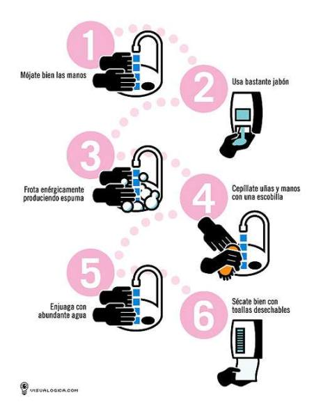
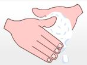

El lavado de manos es tan importante como una buena alimentación. La higiene corporal diaria también lo es y el bañarnos todos los días es cuidar de nuestra salud, porque además nos sentimos bien, descansamos y evitamos la aparición de enfermedades.
El lavado de manos, cuando se realiza en forma correcta, es la manera más eficaz de prevenir la trasmisión de enfermedades. Sigue estos cuatro pasos simples para mantener tus manos limpias:

¿Sabías que el día mundial del lavado de manos es el 15 de octubre?
Es importante animar y ayudar a todas las personas a lavarse las manos antes de comer, después de jugar al aire libre o de jugar con mascotas, después de ir al baño y después de sonarse la nariz. Aún cuando las manos se vean limpias, pueden tener gérmenes o microorganismos que causan enfermedades.

El alcohol en gel ayuda a limpiar nuestras manos pero más efectivo será siempre el correcto lavado con agua y jabón.